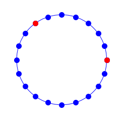
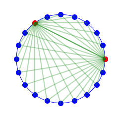
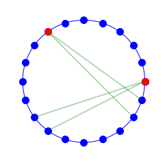
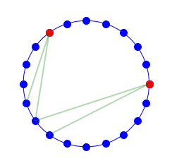
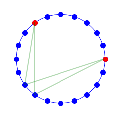
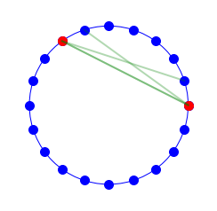
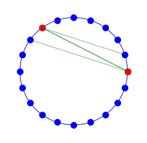

1. Introduction
This post belongs to a new series of posts where I intend to face the challenge of drawing both static and dynamic pictures with a programming language. This practise is commonly referred to as code art, where art is built with code.
One of the most popular languages I have seen so far to create some code art is Javascript, but I wish to investigate how Python libraries to reach the same goal.
The first four posts will aim at defining a function to create a geometric pattern, a spirograph pattern in circle, inspired by this video.
The series purpose is three-fold:
- Plotting skills that are extremely useful for data science visualization
- Geometric algebra basic skills that are required to better understand the domain space in many machine learning applications
- Have some fun by creating art!
We will follow these steps:
- Problem definition and visualization basics in Part1.
- Line definition through two points and intersection of two lines in Part2.
- Polygon vertex detection and postprocessing of intersection points Part3.
- Polygon drawing, colour scheme definition, global function implementation and final drawings in Part4.
2. Description
We start drawing a circle and we set two distinct points on the circumference as generators. The generator is intended to generate a discrete set of lines crossing the generator point itself.
We start setting the main parameters that define the final geometry of the spirograph pattern, i.e., the circle radius radius, the number of points on the circle Npnts, the angle alpha_ab that separate the two generators A and B (in degrees).
We split the circumference into discrete equi-spaced segments whose length is controlled by one of the pattern function arguments, the number of points Npnts, as:
$$ L_{seg} = \frac{2\cdot\pi}{Npnts} $$
We assign the first generator, A, to the east point, which is expressed in a polar system with $\theta_A = 0$.
The second generator, B, is assigned to the closest point of the discretized circumference that creates an angle alpha_ab (in degrees) with A, anticlockwise.
It means that its location is defined as follows:
$$ \theta_B = \lfloor(\theta_A+\Delta\theta_{AB})/L_{seg}\rceil\cdot L_{seg} $$
The Npnts points on the discretized circle are instead defined as follows:
$$ \theta_{P_k} = k\cdot L_{seg}, \forall k \in [0, Npnts-1] $$
import sys, random, math
import numpy as np
import matplotlib.pyplot as plt
from matplotlib.patches import Circle, Wedge, Polygon, Rectangle
from matplotlib.collections import PatchCollection
%matplotlib inline
import itertools
radius = 1
margin = radius * 1.25
Npnts = 20
alpha_ab = 120
Please note that the linspace method requires the number of points to generate from initial and final points included.
Since $\theta=0$ and $\theta=2\pi$ coincide, we need to increase the attribute num by 1.
Lseg = 2*np.pi/Npnts
theta_A = 0
theta_B = np.round((theta_A+alpha_ab/180*np.pi)/Lseg)*Lseg
theta_Ps = np.linspace(0, 2*np.pi, num=Npnts+1)
print('Shape of theta_Ps is {}, since the discrete points are {}'.format(theta_Ps.shape, Npnts))
Shape of theta_Ps is (21,), since the discrete points are 20
3. Visualization basics
To draw these points in Matplotlib, we need the Cartesian coordinates (x, y).
We employ a lambda function to get the two coordinates from the theta variable.
This is quite simple since we exploit the trigonometry theory:
$$ x = r\cdot\cos\theta $$
$$ y = r\cdot\sin\theta $$
You can find further details here.
We apply this function to the polar coordinates of A, B and the array of $P_k$.
polar2cartesian = lambda theta, radius: (radius*np.cos(theta), radius*np.sin(theta))
xPs, yPs = polar2cartesian(theta_Ps, radius)
Pa = polar2cartesian(theta_A, radius)
Pb = polar2cartesian(theta_B, radius)
xA, yA = Pa
xB, yB = Pb
We draw the circle, the Npnts points in blue and the two generators, A and B, in red.
figSize = 4
plt.figure(figsize=(figSize, figSize))
circle = plt.Circle((0, 0), radius, color='b', fill=False)
plt.plot(xPs, yPs, ls='', marker='o', markersize=10, color="blue")
plt.plot([xA, xB], [yA, yB], ls='', marker='o', markersize=10, color="red")
ax = plt.gca()
ax.add_artist(circle)
ax.get_xaxis().set_ticks([])
ax.get_yaxis().set_ticks([])
ax.axis('off')
ax.axis('equal')
ax.axis([-margin, margin, -margin, margin]);

The next step is to draw the lines connecting the two generators, A and B, to each and every other blue point on the circle.
We iterate over the $P_k$ coordinates, as the output of zip, and connect the current $P_k$ point to either A and B with a .3 transparent, 2 point solid green line.
plt.figure(figsize=(figSize, figSize))
circle = plt.Circle((0, 0), radius, color='b', fill=False)
plt.plot(xPs, yPs, ls='', marker='o', markersize=10, color="blue")
plt.plot([xA, xB], [yA, yB], ls='', marker='o', markersize=10, color="red")
for xP, yP in zip(xPs, yPs):
plt.plot([xA, xP], [yA, yP], color="green", lw=2, alpha=.3)
plt.plot([xB, xP], [yB, yP], color="green", lw=2, alpha=.3)
ax = plt.gca()
ax.add_artist(circle)
ax.get_xaxis().set_ticks([])
ax.get_yaxis().set_ticks([])
ax.axis('off')
ax.axis('equal')
ax.axis([-margin, margin, -margin, margin]);

We connect A to two consecutive $P_k$ points (specified with the index idxA=12) by slicing the coordinates xPs and xPs.
We repeat the same process for B, where index is idxB=18.
You can see the 4-vertex polygon as a result of these four crossing lines.
This is what we want to draw and eventually to colour (one every two polygons).
Here it comes the main difference between a human being and a machine (and specifically Matplotlib!). You can easily spot the polygon and colour the inner area defined by the intersecting lines! Matplotlib needs the cartesian coordinates for the polygon itself.
How can we get the 4 coordinates from 4 segments connecting 4 pairs of points?
def fourLines(idxA, idxB):
plt.figure(figsize=(figSize, figSize))
circle = plt.Circle((0, 0), radius, color='b', fill=False)
plt.plot(xPs, yPs, ls='', marker='o', markersize=10, color="blue")
plt.plot([xA, xB], [yA, yB], ls='', marker='o', markersize=10, color="red")
for xP, yP in zip(xPs[idxA:idxA+2], yPs[idxA:idxA+2]):
plt.plot([xA, xP], [yA, yP], color="green", lw=2, alpha=.3)
for xP, yP in zip(xPs[idxB:idxB+2], yPs[idxB:idxB+2]):
plt.plot([xB, xP], [yB, yP], color="green", lw=2, alpha=.3)
ax = plt.gca()
ax.add_artist(circle)
ax.get_xaxis().set_ticks([])
ax.get_yaxis().set_ticks([])
ax.axis('off')
ax.axis('equal')
ax.axis([-margin, margin, -margin, margin]);
idxA, idxB = 12, 18
fourLines(idxA, idxB)

4. Special cases
Before diving into that, let’s just have a look at some extreme cases where the 4 intersecting lines do not create the standard 4-vertex polygon.
The first case shows an example of 4 lines intersecting into a 4-vertex polygon, which is however outside the circle.
idxA, idxB = 12, 11
fourLines(idxA, idxB)

The second case shows an example of 4 lines intersecting into a 4-vertex polygon, which is however cropped by the circumference into two 3-vertex polygons, one of which is internal to the circle.
idxA, idxB = 12, 12
fourLines(idxA, idxB)

The third case shows an example of 4 lines intersecting into a 3-vertex internal polygon, where two segments overlap each other.
idxA, idxB = 6, 0
fourLines(idxA, idxB)

The fourth and last case shows an example of 4 lines intersecting into an empty polygon, since two segments overlap each other while the other two segments are parallel.
idxA, idxB = 7, 0
fourLines(idxA, idxB)
